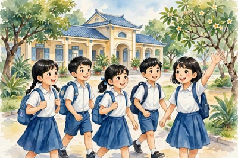

Chủ đề 1. Tuổi học trò

🎬 Ngày đầu vào lớp 6, Lan vừa hồi hộp vừa vui: trường mới, lớp mới, bạn mới. Tiếng hát vang lên trong lễ khai giảng làm Lan thấy ấm lòng. Âm nhạc gắn với tuổi học trò của em như thế nào?
- Chủ đề 1 có bài hát Con đường học trò và bài nghe Tháng năm học trò.
- Đàn piano là nhạc cụ phím: bấm phím trắng và phím đen để tạo ra tiếng đàn.
- Âm thanh có tính nhạc có 4 thuộc tính: cao độ (cao/thấp), trường độ (dài/ngắn), cường độ (mạnh/nhẹ), âm sắc (màu âm).
⚡ Nhớ nhanh
Chủ đề 1: bài hát và nhạc cụ chính là gì?
Bài hát Con đường học trò; đàn piano là nhạc cụ phím.
- Bài đọc nhạc số 1 luyện đọc các nốt nhạc trên khuông nhạc, từng bước một.
- Hát bài về tuổi học trò với tình cảm vui tươi, yêu trường lớp và bạn bè.
Piano là nhạc cụ phím: người chơi bấm các phím trắng và phím đen để tạo ra tiếng đàn.
⚡ Nhớ nhanh![Hình gợi nhớ](data:image/svg+xml;utf8,%3Csvg%20viewBox%3D%220%200%20300%20120%22%20style%3D%22width%3A100%25%3Bmax-width%3A400px%3Bheight%3Aauto%3Bdisplay%3Ablock%3Bmargin%3A0%20auto%22%20xmlns%3D%22http%3A%2F%2Fwww.w3.org%2F2000%2Fsvg%22%3E%3Cg%20transform%3D%22translate%28100%2C10%29%20scale%281.0%29%22%3E%3Crect%20x%3D%2216%22%20y%3D%2236%22%20width%3D%2268%22%20height%3D%2230%22%20fill%3D%22%23ffffff%22%20stroke%3D%22%2337474f%22%20stroke-width%3D%222%22%2F%3E%3Cg%20stroke%3D%22%2337474f%22%20stroke-width%3D%221.5%22%3E%3Cline%20x1%3D%2233%22%20y1%3D%2236%22%20x2%3D%2233%22%20y2%3D%2266%22%2F%3E%3Cline%20x1%3D%2250%22%20y1%3D%2236%22%20x2%3D%2250%22%20y2%3D%2266%22%2F%3E%3Cline%20x1%3D%2267%22%20y1%3D%2236%22%20x2%3D%2267%22%20y2%3D%2266%22%2F%3E%3C%2Fg%3E%3Cg%20fill%3D%22%2337474f%22%3E%3Crect%20x%3D%2228%22%20y%3D%2236%22%20width%3D%228%22%20height%3D%2218%22%2F%3E%3Crect%20x%3D%2245%22%20y%3D%2236%22%20width%3D%228%22%20height%3D%2218%22%2F%3E%3Crect%20x%3D%2262%22%20y%3D%2236%22%20width%3D%228%22%20height%3D%2218%22%2F%3E%3C%2Fg%3E%3C%2Fg%3E%3C%2Fsvg%3E)
4 thuộc tính của âm thanh có tính nhạc là gì?
Cao độ = cao/thấp; trường độ = dài/ngắn; cường độ = mạnh/nhẹ; âm sắc = màu âm.
Là cao độ (cao/thấp), trường độ (dài/ngắn), cường độ (mạnh/nhẹ) và âm sắc (màu âm riêng của từng tiếng đàn, tiếng hát).
⭐ Điểm cần nhớ:
- Bài hát: Con đường học trò; nghe: Tháng năm học trò.
- Piano là nhạc cụ phím.
- 4 thuộc tính: cao độ, trường độ, cường độ, âm sắc.
- Bài đọc nhạc số 1: luyện đọc nốt trên khuông nhạc.
🃏 Flashcard của bài


![Hình gợi nhớ](data:image/svg+xml;utf8,%3Csvg%20viewBox%3D%220%200%20300%20120%22%20style%3D%22width%3A100%25%3Bmax-width%3A400px%3Bheight%3Aauto%3Bdisplay%3Ablock%3Bmargin%3A0%20auto%22%20xmlns%3D%22http%3A%2F%2Fwww.w3.org%2F2000%2Fsvg%22%3E%3Cg%20transform%3D%22translate%28100%2C10%29%20scale%281.0%29%22%3E%3Crect%20x%3D%2224%22%20y%3D%2224%22%20width%3D%2252%22%20height%3D%2256%22%20fill%3D%22%23ffffff%22%20stroke%3D%22%2337474f%22%20stroke-width%3D%222%22%2F%3E%3Crect%20x%3D%2224%22%20y%3D%2224%22%20width%3D%2252%22%20height%3D%2212%22%20fill%3D%22%23ef5350%22%2F%3E%3Cline%20x1%3D%2236%22%20y1%3D%2216%22%20x2%3D%2236%22%20y2%3D%2228%22%20stroke%3D%22%2337474f%22%20stroke-width%3D%223%22%2F%3E%3Cline%20x1%3D%2264%22%20y1%3D%2216%22%20x2%3D%2264%22%20y2%3D%2228%22%20stroke%3D%22%2337474f%22%20stroke-width%3D%223%22%2F%3E%3Cg%20stroke%3D%22%2390a4ae%22%20stroke-width%3D%221.5%22%3E%3Cline%20x1%3D%2224%22%20y1%3D%2250%22%20x2%3D%2276%22%20y2%3D%2250%22%2F%3E%3Cline%20x1%3D%2224%22%20y1%3D%2264%22%20x2%3D%2276%22%20y2%3D%2264%22%2F%3E%3Cline%20x1%3D%2241%22%20y1%3D%2236%22%20x2%3D%2241%22%20y2%3D%2280%22%2F%3E%3Cline%20x1%3D%2258%22%20y1%3D%2236%22%20x2%3D%2258%22%20y2%3D%2280%22%2F%3E%3C%2Fg%3E%3C%2Fg%3E%3C%2Fsvg%3E)